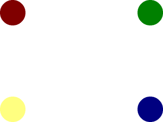
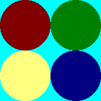

Clip Rendering and Sprite Sheets

Last Updated 1/07/18
Sometimes you only want to render part of a texture. A lot of times games like to keep multiple images on the same sprite sheet as opposed to having a bunch of textures. Using clip rendering, we can define a portion of the texture to render as opposed to rendering the whole thing.//Texture wrapper class
class LTexture
{
public:
//Initializes variables
LTexture();
//Deallocates memory
~LTexture();
//Loads image at specified path
bool loadFromFile( std::string path );
//Deallocates texture
void free();
//Renders texture at given point
void render( int x, int y, SDL_Rect* clip = NULL );
//Gets image dimensions
int getWidth();
int getHeight();
private:
//The actual hardware texture
SDL_Texture* mTexture;
//Image dimensions
int mWidth;
int mHeight;
};
Here we're making a small tweak to the rendering function in the texture class. The render function now accepts a rectangle defining which portion of the texture we want to render.
We give it a default argument of NULL in case we want to render the whole texture.
//Scene sprites
SDL_Rect gSpriteClips[ 4 ];
LTexture gSpriteSheetTexture;
For this tutorial, we're going to take this sprite sheet:
And render each sprite in a different corner:

So we're going to need a texture image and 4 rectangles to define the sprites, which are the variables you see declared here.

And render each sprite in a different corner:
So we're going to need a texture image and 4 rectangles to define the sprites, which are the variables you see declared here.
void LTexture::render( int x, int y, SDL_Rect* clip )
{
//Set rendering space and render to screen
SDL_Rect renderQuad = { x, y, mWidth, mHeight };
//Set clip rendering dimensions
if( clip != NULL )
{
renderQuad.w = clip->w;
renderQuad.h = clip->h;
}
//Render to screen
SDL_RenderCopy( gRenderer, mTexture, clip, &renderQuad );
}
Here's the new rendering function for the texture class that supports clip rendering. It's mostly the same as the previous
texture rendering function but with two changes.
First, when you're clipping and you're using the dimensions of the clip rectangle instead of the texture, we're going to set the width/height of the destination rectangle (here called renderQuad) to the size of the clip rectangle.
Secondly, we're going to pass in the clip rectangle to SDL_RenderCopy as the source rectangle. The source rectangle defines what part of the texture you want to render. When the source rectangle is NULL, the whole texture is rendered.
First, when you're clipping and you're using the dimensions of the clip rectangle instead of the texture, we're going to set the width/height of the destination rectangle (here called renderQuad) to the size of the clip rectangle.
Secondly, we're going to pass in the clip rectangle to SDL_RenderCopy as the source rectangle. The source rectangle defines what part of the texture you want to render. When the source rectangle is NULL, the whole texture is rendered.
bool loadMedia()
{
//Loading success flag
bool success = true;
//Load sprite sheet texture
if( !gSpriteSheetTexture.loadFromFile( "11_clip_rendering_and_sprite_sheets/dots.png" ) )
{
printf( "Failed to load sprite sheet texture!\n" );
success = false;
}
else
{
//Set top left sprite
gSpriteClips[ 0 ].x = 0;
gSpriteClips[ 0 ].y = 0;
gSpriteClips[ 0 ].w = 100;
gSpriteClips[ 0 ].h = 100;
//Set top right sprite
gSpriteClips[ 1 ].x = 100;
gSpriteClips[ 1 ].y = 0;
gSpriteClips[ 1 ].w = 100;
gSpriteClips[ 1 ].h = 100;
//Set bottom left sprite
gSpriteClips[ 2 ].x = 0;
gSpriteClips[ 2 ].y = 100;
gSpriteClips[ 2 ].w = 100;
gSpriteClips[ 2 ].h = 100;
//Set bottom right sprite
gSpriteClips[ 3 ].x = 100;
gSpriteClips[ 3 ].y = 100;
gSpriteClips[ 3 ].w = 100;
gSpriteClips[ 3 ].h = 100;
}
return success;
}
The media loading function loads the texture and then defines the clip rectangles for the circle sprites if the texture loaded successfully.
//While application is running
while( !quit )
{
//Handle events on queue
while( SDL_PollEvent( &e ) != 0 )
{
//User requests quit
if( e.type == SDL_QUIT )
{
quit = true;
}
}
//Clear screen
SDL_SetRenderDrawColor( gRenderer, 0xFF, 0xFF, 0xFF, 0xFF );
SDL_RenderClear( gRenderer );
//Render top left sprite
gSpriteSheetTexture.render( 0, 0, &gSpriteClips[ 0 ] );
//Render top right sprite
gSpriteSheetTexture.render( SCREEN_WIDTH - gSpriteClips[ 1 ].w, 0, &gSpriteClips[ 1 ] );
//Render bottom left sprite
gSpriteSheetTexture.render( 0, SCREEN_HEIGHT - gSpriteClips[ 2 ].h, &gSpriteClips[ 2 ] );
//Render bottom right sprite
gSpriteSheetTexture.render( SCREEN_WIDTH - gSpriteClips[ 3 ].w, SCREEN_HEIGHT - gSpriteClips[ 3 ].h, &gSpriteClips[ 3 ] );
//Update screen
SDL_RenderPresent( gRenderer );
}
Finally here in the main loop we render the same texture 4 times, but we're rendering a different portion of the sprite sheet in different places each call.